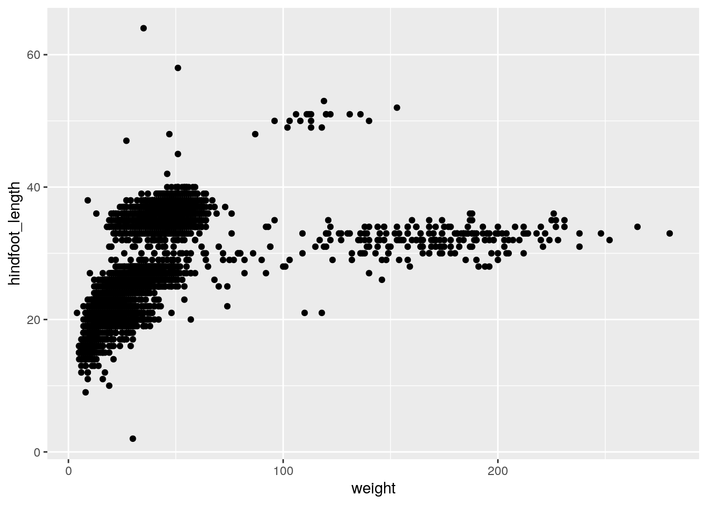
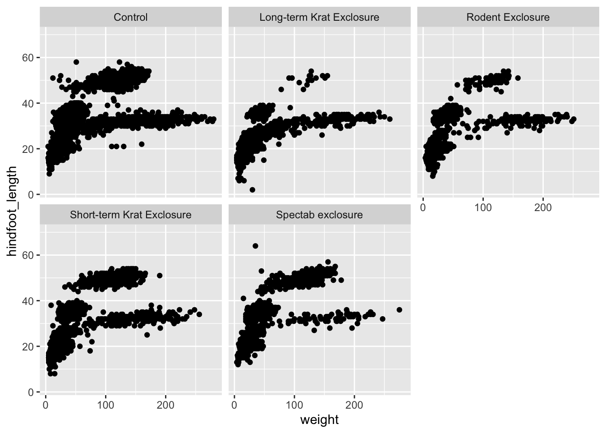
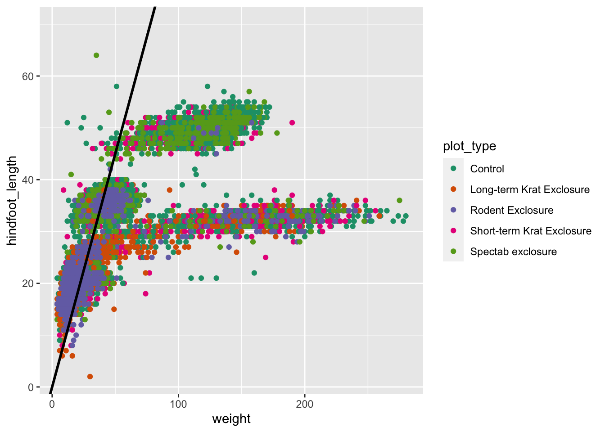
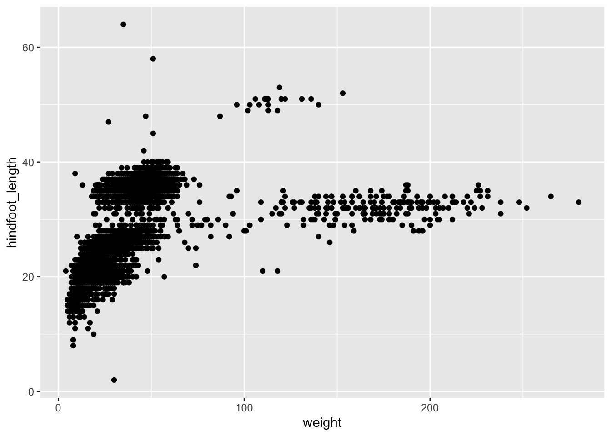
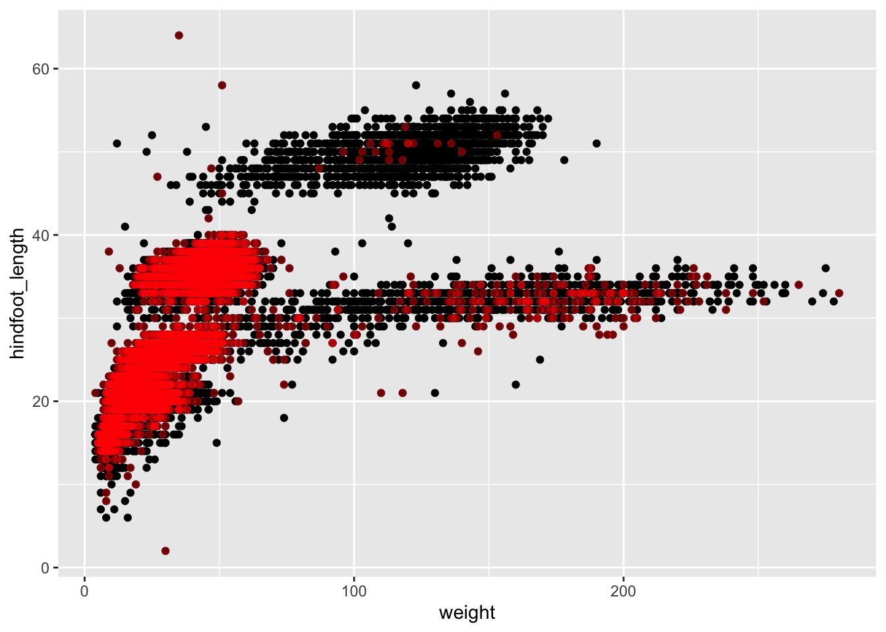
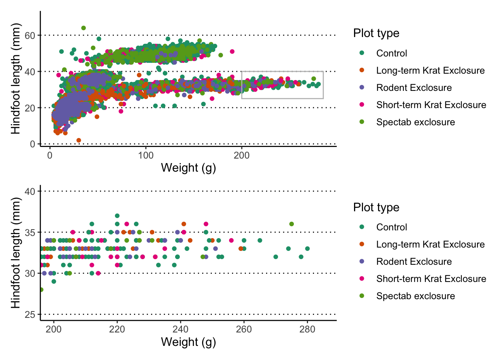
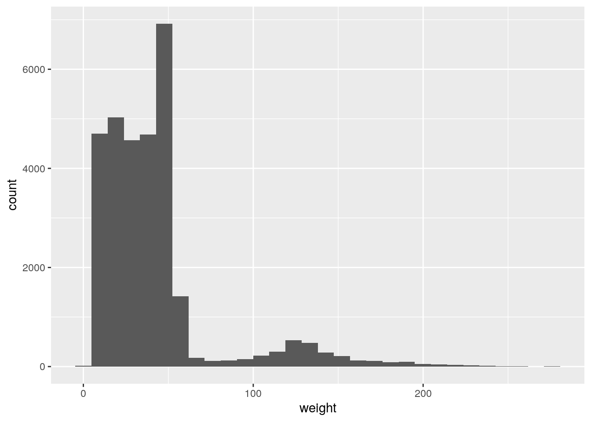

Data visualisation with ggplot2 - part II
In this episode we’re going to expand on our skills using the ggplot2 package, which will allow us to further customise our plots. We’re also going to learn how to assemble several plots together, and export them in a publication-ready manner.
For this lesson, we’ll use the surveys dataset. Let’s read it into R, along with loading the tidyverse package.
# load package
library(tidyverse)
# read data - specify that missing values are encoded as an empty value
surveys <- read_csv("data_raw/portal_data_joined.csv")Let’s also start by making an initial graph, which includes features that we’ve learned about in the intro to ggplot section:
ggplot(data = surveys,
aes(x = weight, y = hindfoot_length)) +
geom_point(aes(colour = plot_type)) +
scale_colour_brewer(palette = "Dark2") +
scale_size_continuous(trans = "log10")
Let’s revise what we’ve done here:
- We’ve defined
surveysas the data frame to be used as data - We used the
geom_point()to draw points on the graph - We defined three aesthetics from columns of our data within
aes():xaxis withweightyaxis withhindfoot_lengthcolourwithplot_type
- We changed our colour scale:
- Using
scale_colour_brewer()we accessed one of the palettes provided by theRColorBrewerpackage (check them out here)
- Using
Let’s save this graph in an object (you can do this with ggplot graphs). This is optional, but often convenient when we want try different customisations or when assembling different plots together, as we will see later on.
# save our graph within an object called `p1`
p1 <- ggplot(data = surveys,
aes(x = weight, y = hindfoot_length)) +
geom_point(aes(colour = plot_type)) +
scale_colour_brewer(palette = "Dark2") +
scale_size_continuous(trans = "log10")To view the plot, you can type it’s name on the console:
p1Annotating your graphs
Labels
We can change the labels of every aesthetic using the labs() function, added on to the graph.
For example:
p1 +
labs(x = "Weight (g)",
y = "Hindfoot length (mm)",
colour = "Plot type",
tag = "A",
title = "Relationship between weight and hindfoot length",
subtitle = "Based on Portal data set",
caption = "done with ggplot2 in R")
Numbering panels
The tag label is particularly useful for numbering panels in composite figures. However, we will see an even more convenient way of doing it later on using the patchwork package.
Labelling data points
You can use the geom_text() or geom_label() functions to add labels to your data points. These two geometries work similarly to geom_point(), except they also need an aesthetic called label to indicate which variable should be used as the text to plot.
For example, let’s label each of our countries with their respective name:
p1 +
geom_text(aes(label = species))
Wow! That’s a bit too much, and not very informative. We can do better, by telling the geometry to check for overlaps:
p1 +
geom_text(aes(label = species), check_overlap = TRUE)
Free annotations
You can also use the more general annotate() function to add any kind of geometry to your graph.
Here’s an example with 3 distinct annotations, each using a different geometry:
p1 +
# add rectangle
annotate(geom = "rect", alpha = 0.3,
xmin = 200, xmax = 285, ymin = 25, ymax = 40) +
# add a segment
annotate(geom = "segment", x = 40, xend = 50, y = 65, yend = 68) +
# add some text
annotate(geom = "text", x = 85, y = 70, label = "Clear outlier")
Adding annotations “manually” can be tedious, as it requires a lot of trial-and-error to get it just right, but it can be convenient when we want to highlight something very specific in our graph.
Adding horizontal, vertical, sloped and trend lines
You can use geom_hline() and geom_vline() to add horizontal and vertical lines, respectively. These can be useful, for example, to mark thresholds that you want to highlight.
# Highlight regions with weight over/below 100
# and hindfoot length over/below 20
p1 +
geom_hline(yintercept = 20, size = 1) +
geom_vline(xintercept = 100, size = 1)
You can also add a sloped line, using geom_abline(), which needs information about the y-intercept and slope of the line:
p1 +
geom_abline(intercept = 0, slope = 0.9, size = 1)
This function is often useful to use when looking at the correlation between two variables on the same scale, and thus highlighting x = y (intercept = 0, slope = 1, which is the default of the function).
Finally, you can also use geom_smooth() to add a trendline to your data.
p1 + geom_smooth()#> `geom_smooth()` using method = 'gam' and formula 'y ~ s(x, bs = "cs")'
What geom_smooth() does is fit a model to the data, and then graphs the mean prediction (with error estimate) from that model. By default, the model used is a LOESS regression. Another common usage is to display the result of a linear regression fit to the data, in which case we can change the method option to “lm” (to use the linear model function from R):
p1 + geom_smooth(method = "lm")#> `geom_smooth()` using formula 'y ~ x'
You can also remove the standard error by setting se = FALSE inside the function.
Adjusting axis limits (zooming)
You can use the coord_cartesian() function to adjust x and y limits. For example, let’s highlight the observations that we annotated with the rectangle earlier:
p1 +
coord_cartesian(xlim = c(200, 285), ylim = c(25, 40))
Themes
You can change the overall look of your graphs by customising the so-called theme used by ggplot2.
Using built-in themes
ggplot2 comes with some pre-defined themes, which can be accessed using the theme_* family of functions. For example, let’s use theme_classic() for a cleaner-looking graph:
p1 +
theme_classic()
Here’s the themes available with ggplot2:

ggplot2 themes
There are also packages that provide with other themes. One of them is the ggthemes package (you can install it with install.packages("ggthemes")), which also provides some aditional colour scales, including colour blind friendly ones.
Finer customisation with theme()
To tune individual elements of the graph, you can use the generic theme() function. This allows you to change the look of every single aspect of the graph, so we cannot cover it all here (look at ?theme documentation to see how many things you can customise!). With this function you can essentially make your own theme.
Here’s some uses of this function that might be useful (try running them yourself!):
# Change the font size
p1 + theme(text = element_text(size = 16))
# Remove legend
p1 + theme(legend.position = "none") # can also use "top", "bottom", "left"
# Change orientation of the x-axis text
p1 + theme(axis.text.x = element_text(angle = 45, hjust = 1))
# Adjust each grid line
p1 + theme(panel.grid.minor.x = element_blank(),
panel.grid.major.x = element_blank(),
panel.grid.minor.y = element_blank(),
panel.grid.major.y = element_line(colour = "black", linetype = "dotted"))In most cases, the way to figure out how to do these customisations is to do a web search. For example searching for “ggplot2 how to change axis text orientation” returns this stackoverflow answer as one of the top results.
Setting up a custom theme
To avoid having to add the theme functions to every graph you make, you can set the default theme you want to use for your graphs using the theme_set() function.
Usually, it may be a good idea to include this at the top of your script, just after you load the libraries:
# Use the "classic" theme as the basis,
# with horizontal grid lines for the y axis and a bigger font
theme_set(theme_classic() +
theme(panel.grid.major.y = element_line(colour = "black", linetype = "dotted"),
text = element_text(size = 12)))Now, every time you display your graphs, they will use the theme set in this way:
p1
Combining what we’ve learned so far, try and create the following 3 graphs, which should be saved as p1, p2 and p3.
Hints:
- update your
p1graph by adding an annotation with a rectangle withxmin = 200, xmax = 285, ymin = 25, ymax = 40. Also add labels to the axis and scales. p2is identical top1, that it’s “zoomed-in” on the area defined by the box inp1.- for
p3, make sure the y-axis is on a log scale (usingscale_y_continuous()); use theannotate_logticks()function to add the ticks on the y-axis; and use thetheme()function to ensure the legend doesn’t show and that the x-axis labels are at a 45 degree angle.

Answer
Here is the full code for each plot:
p1 <- ggplot(data = surveys,
aes(x = weight, y = hindfoot_length)) +
geom_point(aes(colour = plot_type)) +
scale_colour_brewer(palette = "Dark2") +
annotate(geom = "rect", xmin = 200, xmax = 285, ymin = 25, ymax = 40,
colour = "grey", fill = NA) +
labs(x = "Weight (g)", y = "Hindfoot length (mm)",
colour = "Plot type")
p2 <- ggplot(data = surveys,
aes(x = weight, y = hindfoot_length)) +
geom_point(aes(colour = plot_type)) +
scale_colour_brewer(palette = "Dark2") +
coord_cartesian(xlim = c(200, 285), ylim = c(25, 40)) +
labs(x = "Weight (g)", y = "Hindfoot length (mm)",
colour = "Plot type")
p3 <- ggplot(data = surveys,
aes(x = weight, y = hindfoot_length)) +
geom_point(aes(colour = plot_type)) +
scale_colour_brewer(palette = "Dark2") +
scale_y_continuous(trans = "log10") +
annotation_logticks(sides = "l") +
labs(x = "Weight (g)", y = "Hindfoot length (mm)") +
theme(legend.position = "none",
axis.text.x = element_text(angle = 45, hjust = 1))Composing plots
To compose several plots together, we will use the patchwork package (check it’s documentation, which is full of excelent examples of its usage).
The easiest way to use the package is to first save the individual plots we want to assemble in different objects. Let’s use the plots we made in our exercise.
There are different ways in which you can specify how to put graphs together using patchwork, but the way we’re going to use in this lesson uses these two operators:
p1 | p2puts the first plot on the left and the second on the rightp1 / p2puts the first plot on the top and the second on the bottom
Here is an example using the plots we’ve made on our exercise:
# side by side
p1 | p2
# top and bottom
p1 / p2
We can combine these two operators for more complex arrangements, by wrapping different parts of the grid of plots with (). For example:
# Put p1 and p2 side by side. Then put those on the top and p3 on the bottom
(p1 | p2) / p3
Finally, you can customise these arrangements in several ways using the plot_layout() function. For example, we can “colect” the legends and define the relative height of each panel:
( (p1 | p2) / p3 ) +
plot_layout(guides = "collect", heights = c(2, 1))
We can use plot_spacer() to add an empty space to our graph, which can be useful if we want to add something else later on using another program (e.g. an image).
For example, let’s put a “blank” space where the second plot should be
( (p1 | plot_spacer()) / p3 ) +
plot_layout(guides = "collect", heights = c(2, 1))
Finally, we can also add annotations, which is very useful to add automatic “tags” to each panel:
( (p1 | p2) / p3 ) +
plot_layout(guides = "collect", heights = c(2, 1)) +
plot_annotation(tag_levels = "A",
title = "Figure 1")
Saving graphs
We’ve already covered how to use the ggsave() function in the first ggplot session. To save assembled graphs, you can do a similar thing, but instead of saving a single graph, you can save the whole assembly into an object, and then pass that to ggsave():
# Save the "patch" of graphs into an object called fig1
fig1 <- ( (p1 | p2) / p3 ) +
plot_layout(guides = "collect", heights = c(2, 1)) +
plot_annotation(tag_levels = "A",
title = "Figure 1")
# save it as PDF using 15cm x 7cm
ggsave(filename = "figures/correlations_weight_hindfoot.pdf",
plot = fig1,
width = 15,
height = 7,
units = "cm")